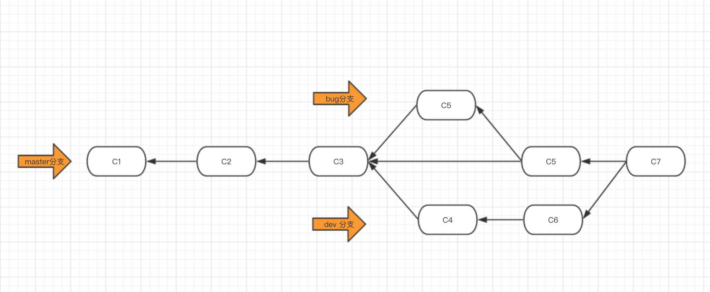
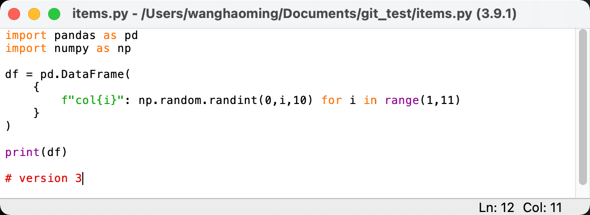
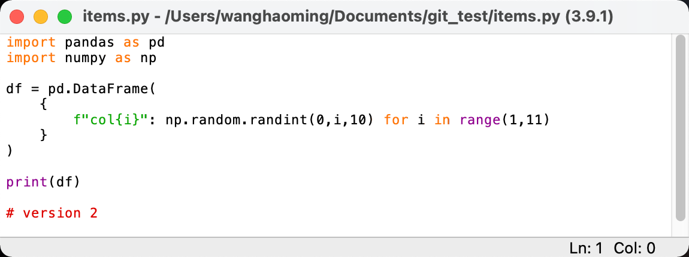
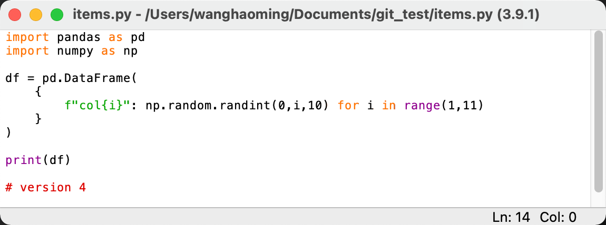
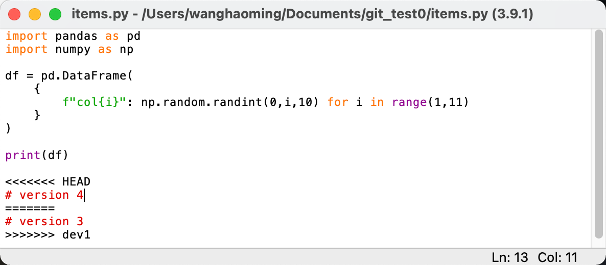
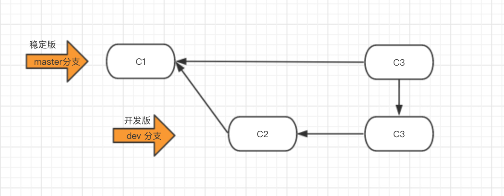

1. 分支简介
假设在版本 1 （V1）中一共写入 100 个文件；在 V2 中修改了 V1 中的 10 个文件，并新写入 20 个文件。则 Git 在生成 V2 时，会只生成新变化的 30 个文件，并通过指针指向 V1 从而链接未改变的 90 个文件，提升效率。
扩展这一过程，此时 A，B 两台电脑可以在 V2 的基础上分别开发不同的功能，并生成 V3，V4，这一就形成了两个分支：
当 A，B 完成开发后，可以将两分支汇合生成 V5：
考虑如下一种工作流程：若项目（C3）目前需求开发一项新功能，则可以为其创建一个分支（如 dev 分支），并在该分支上不断开发。若在开发的过程中发现原项目（C3）存在 bug，在可以在 C3 再创建一个 bug 分支，并在该分支上修改 bug。当 dev 分支与 bug 分支上的工作都已完成，再将这两分支合并到 Master 上。（Master 是 git 版本管理的默认主干）
分支可以创建一个相互隔离的环境，从而让开发者各自完成工作再合并。

2. 分支命令
继续以 ~/Documents/git_test 为例，如下是版本历史：
(base) wanghaoming@localhost git_test % git log
commit 1954fae802221ffd98fa26512275a4817ff3dc5d (HEAD -> master)
Author: git_username <git_username@163.com>
Date: Sat Mar 5 09:04:22 2022 +0800
v2
commit 2ecfd74d8ac144d1ee7a5a8ad1875013e56ebb72
Author: git_username <git_username@163.com>
Date: Sat Mar 5 09:03:51 2022 +0800
v1
2.1 查看分支 branch
几乎每一种版本控制系统都以某种形式支持分支。使用分支意味着你可以从开发主线上分离开来，然后在不影响主线的同时继续工作。
列出分支基本命令：
git branch
没有参数时，git branch 会列出你在本地的分支。当你执行 git init 的时候，默认情况下 Git 就会为你创建 master 分支。
(base) wanghaoming@localhost git_test % git branch
* master
此例的意思就是，我们有一个叫做 master 的分支，并且该分支是当前分支。
2.2 创建新分支
创建分支命令：
git branch (branchname)
在 Master 下创建 dev1 分支：
(base) wanghaoming@localhost git_test % git branch dev1
(base) wanghaoming@localhost git_test % git branch
dev1
* master
星号表明，此时文件仍在 master 上。
2.3 切换分支
切换分支命令:
git checkout (branchname)
当你切换分支的时候，Git 会用该分支的最后提交的快照替换你的工作目录的内容， 所以多个分支不需要多个目录。
(base) wanghaoming@localhost git_test % git checkout dev1
Switched to branch 'dev1'
(base) wanghaoming@localhost git_test % git branch
* dev1
master
当切换至 dev1 分支后，dev1 与 master 相互隔离，此时在 dev1 中进行开发，不会影响 master 中的内容。
在 dev1 分支中将 items.py 修改为 version 3，并生成版本 v3：

(base) wanghaoming@localhost git_test % git status
On branch dev1
Changes not staged for commit:
(use "git add <file>..." to update what will be committed)
(use "git restore <file>..." to discard changes in working directory)
modified: items.py
no changes added to commit (use "git add" and/or "git commit -a")
注意第二行，表明该文件在 dev1 分支上
(base) wanghaoming@localhost git_test % git add .
(base) wanghaoming@localhost git_test % git commit -m "v3"
[dev1 f32e3c3] v3
1 file changed, 1 insertion(+), 1 deletion(-)
(base) wanghaoming@localhost git_test % git log
commit f32e3c3de4f0515585073c09d3b77ec75dbca118 (HEAD -> dev1)
Author: git_username <git_username@163.com>
Date: Sat Mar 5 09:10:11 2022 +0800
v3
commit 1954fae802221ffd98fa26512275a4817ff3dc5d (master)
Author: git_username <git_username@163.com>
Date: Sat Mar 5 09:04:22 2022 +0800
v2
commit 2ecfd74d8ac144d1ee7a5a8ad1875013e56ebb72
Author: git_username <git_username@163.com>
Date: Sat Mar 5 09:03:51 2022 +0800
v1
由版本日志可以看到 v3 版本在 dev1 分支上。
下面切换回 master 并创建新分支 dev2：
(base) wanghaoming@localhost git_test % git checkout master
Switched to branch 'master'
此时又恢复为 v2 版本：

此时在 master 下创建第二个分支 dev2：
(base) wanghaoming@localhost git_test % git branch dev2
(base) wanghaoming@localhost git_test % git branch
dev1
dev2
* master
进入 dev2 分支：
(base) wanghaoming@localhost git_test % git checkout dev2
Switched to branch 'dev2'
在 dev2 中进行如下开发

提交为 v4 版本：
(base) wanghaoming@localhost git_test % git status
On branch dev2
Changes not staged for commit:
(use "git add <file>..." to update what will be committed)
(use "git restore <file>..." to discard changes in working directory)
modified: items.py
no changes added to commit (use "git add" and/or "git commit -a")
(base) wanghaoming@localhost git_test % git add .
(base) wanghaoming@localhost git_test % git commit -m "v4"
[dev2 a4f0ad2] v4
1 file changed, 1 insertion(+), 1 deletion(-)
2.4 合并分支
合并分支命令:
git merge (branchname)
一旦某分支有了独立内容，你可以通过该命令将它合并回到你的主分支。 你可以多次合并到统一分支， 也可以选择在合并之后直接删除被并入的分支。
master 就是我们常说的线上分支，将开发分支与 master合并即是上线。若要将分支上线，需要先切换到 master 上：
(base) wanghaoming@localhost git_test % git checkout master
Switched to branch 'master'
然后执行合并命令：
(base) wanghaoming@localhost git_test % git merge dev2
Updating 1954fae..a4f0ad2
Fast-forward
items.py | 2 +-
1 file changed, 1 insertion(+), 1 deletion(-)
注意此时上线版本就是 v4，因为 git 没有检测出修改：
(base) wanghaoming@localhost git_test % git status
On branch master
nothing to commit, working tree clean
通过另一种方法也可以看出这一事实：
(base) wanghaoming@localhost git_test % git reflog
a4f0ad2 (dev2) HEAD@{4}: merge dev2: Fast-forward
1954fae HEAD@{5}: checkout: moving from dev2 to master
a4f0ad2 (dev2) HEAD@{6}: commit: v4
1954fae HEAD@{7}: checkout: moving from master to dev2
1954fae HEAD@{8}: checkout: moving from dev1 to master
f32e3c3 (dev1) HEAD@{9}: commit: v3
1954fae HEAD@{10}: checkout: moving from master to dev1
1954fae HEAD@{11}: commit: v2
2ecfd74 HEAD@{12}: commit (initial): v1
可以看到 commit: v4 与 merge dev2: Fast-forward 的版本号都是 a4f0ad2，这说明它们是同一文件。
比较复杂的情况是当上线 dev2 后要再上线 dev1 的时候可能会报告冲突：
(base) wanghaoming@localhost git_test % git merge dev1
Auto-merging items.py
CONFLICT (content): Merge conflict in items.py
Automatic merge failed; fix conflicts and then commit the result.
dev2(v4) 是从 master(v2) 分出并合并的，因此当两者合并时不会产生冲突，但是当 dev1(v3) 再与 master(v4) 合并时就有可能产生冲突，因为 v3 来自于 v2。（对于 Git 合并原理后续将再写一篇博客详述）

此时 items.py 文件变为：

手动调整为需要的版本后，在提交为新版本即可。
2.5 删除分支
删除分支命令：
git branch -d (branchname)
对命令 git branch 设置 -d 选项可以删除分支：
(base) wanghaoming@localhost git_test % git branch
dev1
dev2
* master
(base) wanghaoming@localhost git_test % git branch -d dev2
Deleted branch dev2 (was a4f0ad2).
(base) wanghaoming@localhost git_test % git branch
dev1
* master
2.6 工作流
应该先在 dev 分支上开发任意新功能，待功能成熟后再合并到 master 分支上：

3. 命令总结
git branch：查看分支git branch <branch name>：创建分支git branch -d <branch name>：删除分支git checkout <branch name>：切换分支git merge <branch name>：合并分支 （若要将 B 分支合并到 A 分支上，则需要先切换至 A 分支，然后执行命令git merge B）